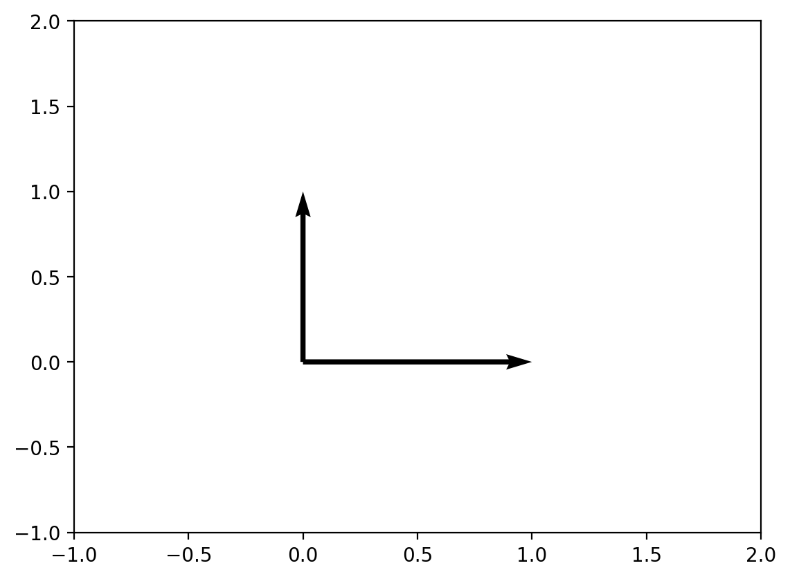

Word Embeddings and Vector Angles
embeddings, word2vec, cosine similarity, vector angles, natural language processing, similarity measures
Word Embeddings and Vector Angles
Introduction
This notebook explores the fascinating relationship between vector angles and semantic similarity in word embeddings. We’ll demonstrate how geometric concepts from linear algebra apply to natural language processing, particularly in measuring word similarities.
Learning Objectives
By the end of this notebook, you will understand: - How to calculate angles between vectors using dot products - The concept of cosine similarity in vector spaces - How word embeddings capture semantic relationships - The practical application of vector geometry in NLP
Prerequisites
- Basic linear algebra (vectors, dot products)
- Understanding of Python and NumPy
- Familiarity with the concept of word embeddings
Vector Angles: Mathematical Foundation
We begin with a simple example of computing angles between 2D vectors. The angle between two vectors can be calculated using the dot product formula:
\[\cos(\theta) = \frac{\mathbf{v_1} \cdot \mathbf{v_2}}{|\mathbf{v_1}| \cdot |\mathbf{v_2}|}\]
Where \(\theta\) is the angle between vectors \(\mathbf{v_1}\) and \(\mathbf{v_2}\).
Exploring Different Vector Combinations
Notice how the angle changes as we modify the vectors. Perpendicular vectors have a 90° angle, while parallel vectors have 0° angle.
Word Embeddings: From Words to Vectors
Now we transition to the main topic: word embeddings. Word embeddings are dense vector representations of words that capture semantic relationships. We’ll use pre-trained GloVe embeddings to explore how words relate to each other in vector space.
Loading Pre-trained Word Embeddings
We’ll use the GloVe (Global Vectors for Word Representation) model, which creates word embeddings by analyzing word co-occurrence statistics from large text corpora.
Example 1: Simple 2D Vector Angles
Let’s start with basic examples to understand how angles work with simple vectors.
Examining Word Vectors
Let’s look at the actual vector representation of the word “king”. Each word is represented as a 50-dimensional vector where each dimension captures different semantic features.
def angle_between(v1, v2):
cos_theta = np.dot(v1, v2) / (np.linalg.norm(v1) * np.linalg.norm(v2))
return np.arccos(np.clip(cos_theta, -1.0, 1.0)) * 180 / np.pi
v1 = np.array([1, 0])
v2 = np.array([1, 1])
plt.quiver([0, 0], [0, 0], [v1[0], v2[0]], [v1[1], v2[1]], angles='xy', scale_units='xy', scale=1)
plt.xlim(-1, 2)
plt.ylim(-1, 2)
print(f"Angle: {angle_between(v1, v2):.2f}°")Angle: 45.00°
Measuring Semantic Similarity with Angles
King and Queen: A Classic Example
The angle between “king” and “queen” vectors demonstrates how semantically related words have smaller angles between their vector representations. This is a fundamental principle in word embeddings.
Family Relationships in Vector Space
Family relationship words like “uncle” and “aunt” should have relatively small angles since they represent similar family concepts.
Dissimilar Words: Larger Angles
When we compare semantically unrelated words like “king” and “python” (the programming language), we expect to see much larger angles, indicating low semantic similarity.
Exploring Word Neighborhoods
Finding Similar Words
The most_similar function finds words with the smallest angles (highest cosine similarity) to a given word. This demonstrates how vector space geometry captures semantic relationships.
Finding Dissimilar Words
Conversely, we can find words that are most dissimilar (largest angles) to understand what the model considers semantically distant.
Verification: Computing Angles with Dissimilar Words
Let’s verify our findings by computing the actual angle between “king” and one of the most dissimilar words.
Key Insights and Conclusions
What We’ve Learned
- Vector Angles and Similarity: Smaller angles between word vectors indicate greater semantic similarity
- Cosine Similarity: This metric (cosine of the angle) is widely used in NLP for measuring word similarity
- Geometric Intuition: Word embeddings transform linguistic relationships into geometric relationships in high-dimensional space
- Practical Applications: These concepts are fundamental to search engines, recommendation systems, and many NLP tasks
Mathematical Relationship
The relationship between angle \(\theta\) and cosine similarity is: - \(\theta = 0°\) → \(\cos(\theta) = 1\) → Perfect similarity - \(\theta = 90°\) → \(\cos(\theta) = 0\) → No correlation
- \(\theta = 180°\) → \(\cos(\theta) = -1\) → Perfect opposition
Real-world Applications
Understanding vector angles in embeddings is crucial for: - Information Retrieval: Finding relevant documents - Recommendation Systems: Suggesting similar items - Machine Translation: Aligning words across languages - Sentiment Analysis: Understanding emotional relationships between words
print(f"Angle: {angle_between(v1, np.array([0, 1])):.2f}°")
plt.quiver([0, 0], [0, 0], [v1[0], 0], [v1[1], 1], angles='xy', scale_units='xy', scale=1)
plt.xlim(-1, 2)
plt.ylim(-1, 2)Angle: 90.00°
array([ 0.50451 , 0.68607 , -0.59517 , -0.022801, 0.60046 , -0.13498 ,
-0.08813 , 0.47377 , -0.61798 , -0.31012 , -0.076666, 1.493 ,
-0.034189, -0.98173 , 0.68229 , 0.81722 , -0.51874 , -0.31503 ,
-0.55809 , 0.66421 , 0.1961 , -0.13495 , -0.11476 , -0.30344 ,
0.41177 , -2.223 , -1.0756 , -1.0783 , -0.34354 , 0.33505 ,
1.9927 , -0.04234 , -0.64319 , 0.71125 , 0.49159 , 0.16754 ,
0.34344 , -0.25663 , -0.8523 , 0.1661 , 0.40102 , 1.1685 ,
-1.0137 , -0.21585 , -0.15155 , 0.78321 , -0.91241 , -1.6106 ,
-0.64426 , -0.51042 ], dtype=float32)[ 0.37854 1.8233 -1.2648 -0.1043 0.35829 0.60029
-0.17538 0.83767 -0.056798 -0.75795 0.22681 0.98587
0.60587 -0.31419 0.28877 0.56013 -0.77456 0.071421
-0.5741 0.21342 0.57674 0.3868 -0.12574 0.28012
0.28135 -1.8053 -1.0421 -0.19255 -0.55375 -0.054526
1.5574 0.39296 -0.2475 0.34251 0.45365 0.16237
0.52464 -0.070272 -0.83744 -1.0326 0.45946 0.25302
-0.17837 -0.73398 -0.20025 0.2347 -0.56095 -2.2839
0.0092753 -0.60284 ][('prince', 0.8236179351806641),
('queen', 0.7839044332504272),
('ii', 0.7746230363845825),
('emperor', 0.7736247777938843),
('son', 0.766719400882721),
('uncle', 0.7627150416374207),
('kingdom', 0.7542160749435425),
('throne', 0.7539914846420288),
('brother', 0.7492411136627197),
('ruler', 0.7434254288673401)][('4,835', 0.729358434677124),
('rules-based', 0.7123876810073853),
('renos', 0.7085371613502502),
('meawhile', 0.706490159034729),
('nanobiotechnology', 0.6925080418586731),
('m-42', 0.6916395425796509),
('poligny', 0.6882078051567078),
('onyekwe', 0.6877189874649048),
('asie', 0.6861312985420227),
('metabolomics', 0.682388961315155)]